Hotel Information
Check-in: 3 p.m.
Check-out: 11 a.m.
Breakfast hours: 7.30-10.30 a.m.
Room cleaning hours: 3-6 p.m.
Reception desk is available 24/7
Wi-Fi is accessible without a password
Our Services
Concierge service
Elevate your experience with custom tours, special occasion room setups as birthday set or romantic set, and more!

Taxi service
Enjoy transportation to and from major transit points like the airport and train station, ensuring a smooth start and end to your travels!

Restaurant booking
Savor the best of local and international cuisine with our restaurant booking service, guaranteeing you a table at top-rated restaurants!
Our Locations

Hotel U Malvaze
Anenská 7, Prague 1
Main hotel with 24/7 reception desk
Anenská 7, Prague 1
Main hotel with 24/7 reception desk
Boutique Residence
Jilská 24, Prague 1
Residence with self check-in kiosk
Jilská 24, Prague 1
Residence with self check-in kiosk


Old Town Residence
Maiselová 15, Prague 1
Residence with self check-in kiosk
Maiselová 15, Prague 1
Residence with self check-in kiosk
Contact Us
If you have any questions, feel free to contact our reception via WhatsApp or by email.
Prague Highlights

is a historic stone bridge that offers breathtaking views of the Vltava River and Prague Castle

showcases the famous Astronomical Clock, colorful buildings, and a vibrant atmosphere

is a grand fortress comprising museums, churches, and breathtaking architecture

is a vibrant district brimming with shops, eateries, and historic architecture

is historical significance with synagogues, the Jewish Cemetery, and various landmarks
Prague City Tours
All Inclusive Tour:
This comprehensive tour allows you to experience the best of Prague in six hours. It includes a scenic boat trip on the Vltava River, offering unique views of the city from the water, including sights like Charles Bridge and Prague Castle.
Price: 1590 CZK / 1500 CZK Senior & Student
This comprehensive tour allows you to experience the best of Prague in six hours. It includes a scenic boat trip on the Vltava River, offering unique views of the city from the water, including sights like Charles Bridge and Prague Castle.
Price: 1590 CZK / 1500 CZK Senior & Student
Prague Castle:
Explore the grandeur of Prague Castle with this two-hour guided tour that takes you through the entire castle area.
Price: 650 CZK
Explore the grandeur of Prague Castle with this two-hour guided tour that takes you through the entire castle area.
Price: 650 CZK
Prague Jewish Town:
This three-hour tour takes you through Prague’s historic Jewish Quarter, known as Josefov. The tour includes visits to the ancient synagogues, the Jewish Cemetery, and the Old-New Synagogue.
Price: 1290 CZK / 1250 CZK Senior & Student
This three-hour tour takes you through Prague’s historic Jewish Quarter, known as Josefov. The tour includes visits to the ancient synagogues, the Jewish Cemetery, and the Old-New Synagogue.
Price: 1290 CZK / 1250 CZK Senior & Student
Prague by Night River Cruise:
Experience the magic of Prague at night with this three-hour evening river cruise.
Price: 1480 CZK essential / 1980 CZK exclusive
Experience the magic of Prague at night with this three-hour evening river cruise.
Price: 1480 CZK essential / 1980 CZK exclusive
Beer Tour:
Discover the famous Czech beer culture on this 3.5-hour guided beer-tasting tour. You'll visit some of Prague's best pubs and breweries, where you can sample a variety of Czech beers and learn about the brewing process.
Price: 1300 CZK
Discover the famous Czech beer culture on this 3.5-hour guided beer-tasting tour. You'll visit some of Prague's best pubs and breweries, where you can sample a variety of Czech beers and learn about the brewing process.
Price: 1300 CZK
Clementinum Czech Orchestra:
Price: 950 CZK / 800 CZK / 650 CZK
Price: 950 CZK / 800 CZK / 650 CZK
Hop-On Hop-Off Bus:
Price: 870 CZK 24hr / 990 CZK 48hr
Price: 870 CZK 24hr / 990 CZK 48hr
Out of Prague Tours
Český Krumlov:
This full-day tour takes you to Český Krumlov, home to the largest Baroque chateau in the Czech Republic.
Price: 2890 CZK / 2790 CZK Senior & Student
This full-day tour takes you to Český Krumlov, home to the largest Baroque chateau in the Czech Republic.
Price: 2890 CZK / 2790 CZK Senior & Student
Terezin Monument:
This poignant tour takes you to the town of Terezín, the site of the largest concentration camp in the Czech Republic during World War II.
Price: 1490 CZK / 1390 CZK Senior & Student
This poignant tour takes you to the town of Terezín, the site of the largest concentration camp in the Czech Republic during World War II.
Price: 1490 CZK / 1390 CZK Senior & Student
Karlovy Vary Tour:
Discover the beauty and elegance of Karlovy Vary, the most famous spa town in the Czech Republic.
Price: 2190 CZK / 2140 CZK Senior & Student
Discover the beauty and elegance of Karlovy Vary, the most famous spa town in the Czech Republic.
Price: 2190 CZK / 2140 CZK Senior & Student
Karlštejn Castle Tour:
Visit the majestic Karlštejn Castle, a 14th-century Gothic fortress built by Emperor Charles IV to protect the crown jewels.
Price: 1390 CZK / 1290 CZK Senior & Student
Visit the majestic Karlštejn Castle, a 14th-century Gothic fortress built by Emperor Charles IV to protect the crown jewels.
Price: 1390 CZK / 1290 CZK Senior & Student
Kutná Hora Tour:
Explore the UNESCO-listed town of Kutná Hora, renowned for its beautifully preserved medieval architecture.
Price: 1640 CZK / 1540 CZK Senior & Student
Explore the UNESCO-listed town of Kutná Hora, renowned for its beautifully preserved medieval architecture.
Price: 1640 CZK / 1540 CZK Senior & Student
Restaurant U Malvaze